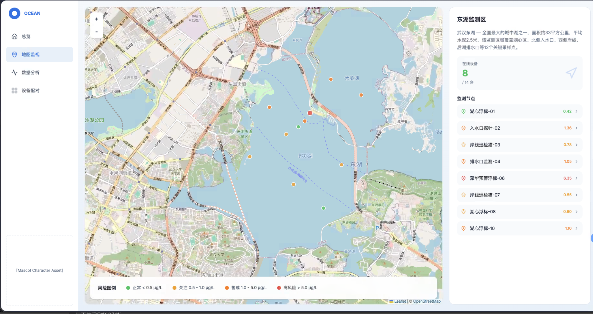

Bloom risk appears
Visual water changes are only the surface of a toxin-monitoring problem.
SCAU-China
A proposed iGEM-style project that connects biological sensing, RNA modeling, hardware deployment, and public engagement for freshwater microcystin risk.
Scroll story
Cyanobacterial blooms are detected, translated into a biological signal, sent to the cloud, and turned into an early warning loop.
Visual water changes are only the surface of a toxin-monitoring problem.
The detection platform becomes the first checkpoint in the monitoring loop.
RNA design and reporter logic make the invisible toxin risk readable.
Local sensing becomes a regional picture through cloud records and dashboards.
The goal is not just measurement, but faster decisions around freshwater safety.
Overview
The top navigation now opens separate pages for project description, engineering, modeling, hardware, human practices, art, team, and attributions. Each page uses only the supplied project and art materials; unavailable details are clearly marked as pending.
Project
The environmental problem, MC-LR target, regional risk evidence, seasonal monitoring window, and why rapid monitoring is needed.
Wet lab
Promoter sensing, START riboswitch design, internal fluorescence reference, Lux amplification, and biosafety architecture.
Dry lab
A staged computational route from RNA candidate generation to thermodynamic filtering, 3D folding, and docking.
Device
A monitoring platform that combines cloud maps, detection boats, sampling chambers, and deployment concepts.

System
The supplied hardware material shows an interface for monitoring sites, checking risk states, and analyzing collected water-quality data.
The site presents this as an operational loop: detect the toxin risk, send data to the cloud, issue an alert, and guide follow-up response devices.
Current source coverage